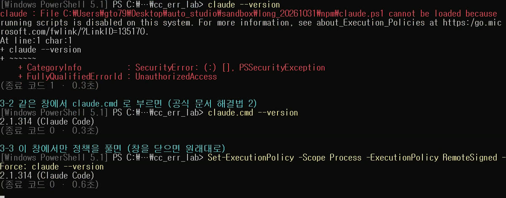
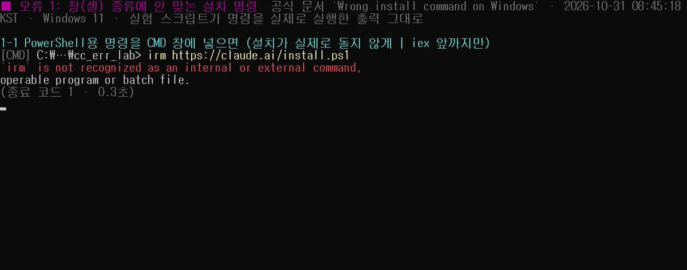
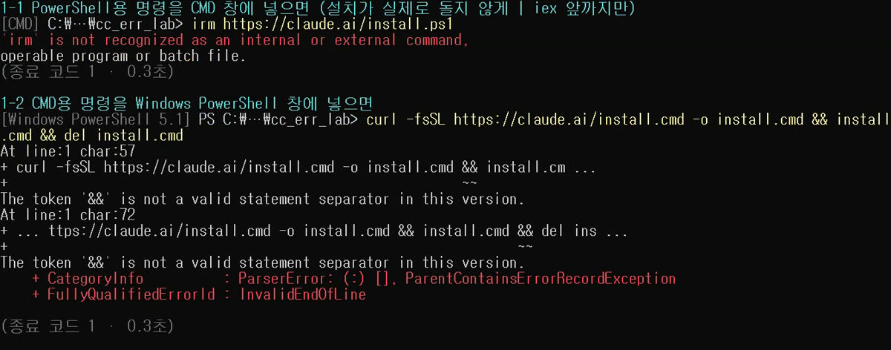
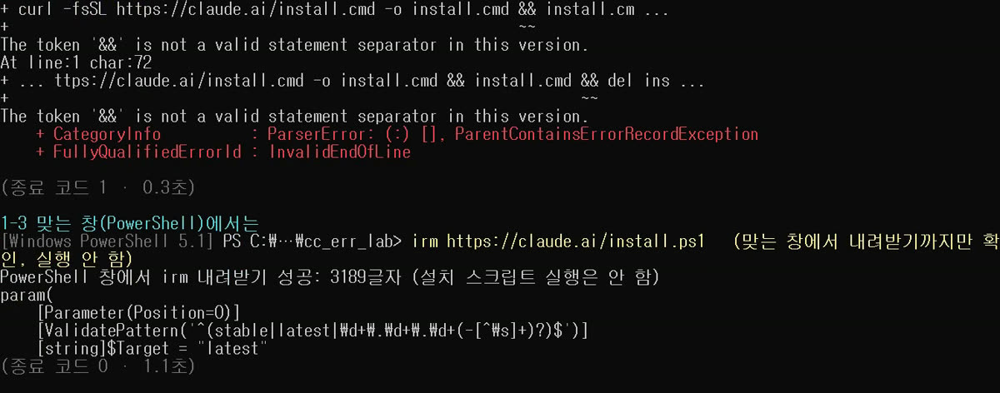
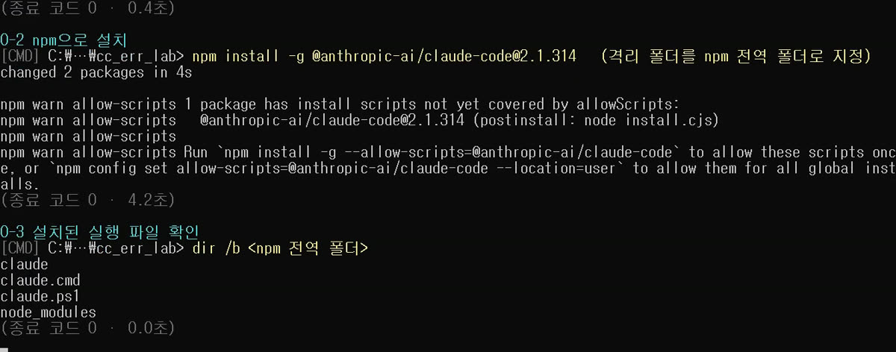
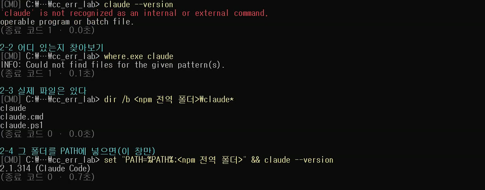
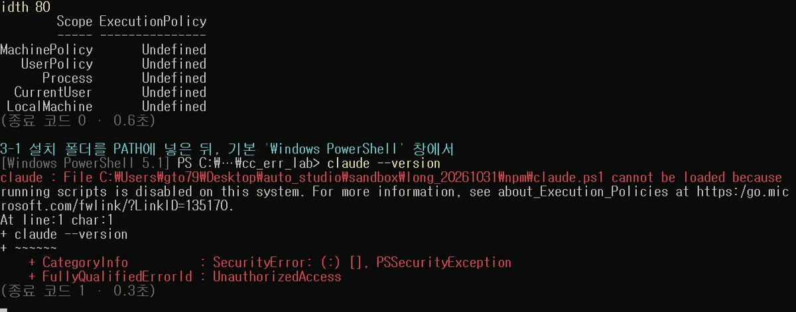
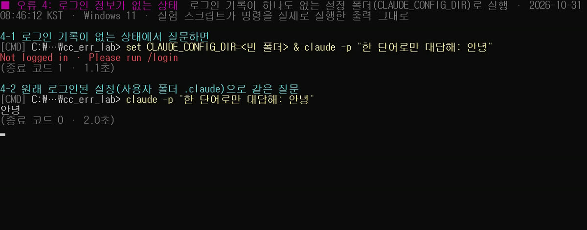
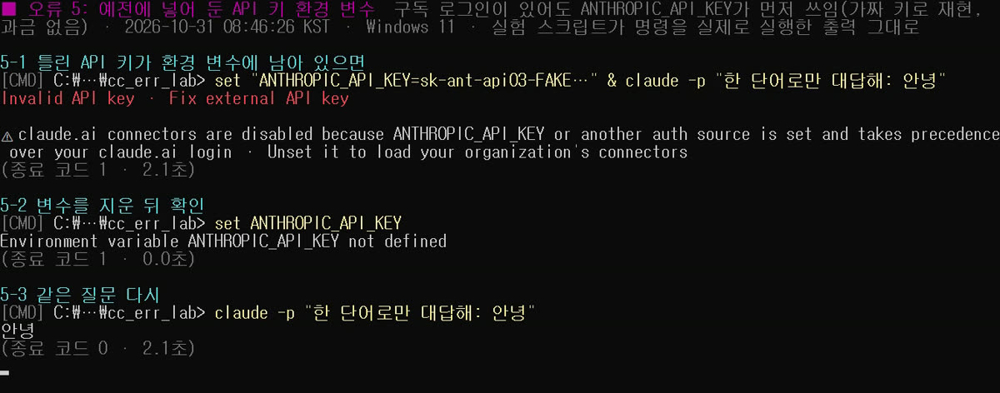
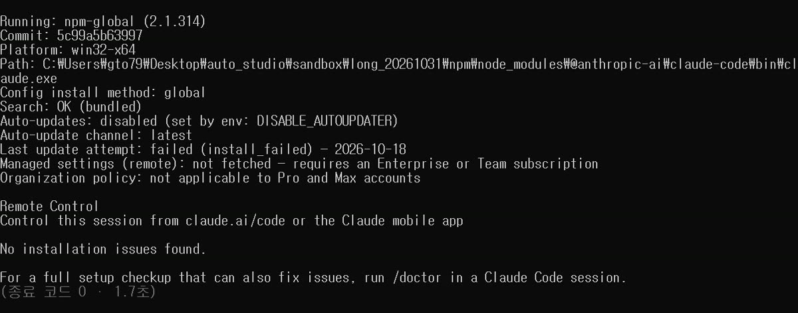

Claude Code 윈도우 설치 오류 5가지 해결법: 직접 일으켜 보고 다 고친 순서(초보자용)

검증 범위 · 직접 재현(오류 5개 · 재현 5/5 · 해결 5/5) · 이 글의 결과는 윈도우 11 PC 한 대에서 오류마다 1번씩 해 본 실제 기록이며, 다른 PC·버전·네트워크 환경에서는 다를 수 있습니다.
명령어·설정·실패 해결표 바로 보기 (무료 공개)윈도우에서 Claude Code(클로드 코드) 를 설치하다가 빨간 글씨를 보고 멈췄다면, 이 글 하나로 대부분 풀 수 있게 정리했어요. 자주 막히는 오류 5가지를 저희 PC에서 일부러 일으켜 보고, 하나씩 고쳐서 정말 풀리는지 확인했습니다.
2026년 10월 31일, 윈도우 11 PC 한 대에서 원래 쓰던 Claude 계정으로 직접 해 본 결과입니다(Claude Code 2.1.314). 협찬은 없습니다.
명령어·설정·실패 해결표
| 구분 | 내용 | 해결 |
|---|---|---|
| 명령어 | /login | |
| 명령어 | irm https://claude.ai/install.ps1 | iex | |
| 명령어 | curl -fsSL https://claude.ai/install.cmd -o install.cmd && install.cmd && del install.cmd | |
| 명령어 | irm https://claude.ai/install.ps1 |
한눈에 보기: 오류 5가지와 해결
| 번호 | 화면에 뜬 말(원문) | 원인 | 해결 | 해결 확인 |
|---|---|---|---|---|
| 1 | 'irm' is not recognized / The token '&&' is not a valid statement separator | 창(CMD·PowerShell)에 안 맞는 설치 명령 | 창에 맞는 명령 쓰기 | ✅ 맞는 창에서 내려받기 성공 |
| 2 | 'claude' is not recognized | 설치 폴더가 PATH에 없음 | PATH에 폴더 추가 후 새 창 | ✅ 2.1.314 (Claude Code) |
| 3 | claude.ps1 cannot be loaded because running scripts is disabled | PowerShell 실행 정책이 .ps1 파일을 막음 | claude.cmd 로 부르기 | ✅ 2.1.314 (Claude Code) |
| 4 | Not logged in · Please run /login | 로그인 기록이 없음 | claude 실행 → /login | ✅ 로그인된 상태에서 답 "안녕" |
| 5 | Invalid API key · Fix external API key | 예전에 넣어 둔 ANTHROPIC_API_KEY 환경 변수 | 그 변수를 지우고 새 창 | ✅ 구독 로그인으로 답 "안녕" |
- 5개 모두 재현 1/1, 해결 1/1 (오류마다 1번씩 해 봤어요)
- 실행한 명령은 모두 20번, 화면은 실행과 동시에 녹화했어요.
이 글에서 '직접 해 봄'과 '문서 기준' 구분
- ✅ 직접 해 봄: 저희 PC에서 실제로 실행하고 출력과 화면을 남긴 것
- 📄 문서 기준: Claude Code 공식 문서(설치·문제 해결)에 적힌 것을 옮긴 것
시작 전에: 내 창이 CMD인지 PowerShell인지 보는 법
윈도우에는 명령을 치는 창이 두 종류 있어요. 설치 명령이 창마다 다르기 때문에 이것부터 구별해야 해요.
- 시작 메뉴에서 PowerShell 또는 명령 프롬프트(CMD) 를 검색해서 엽니다.
- 깜빡이는 줄 앞을 보세요.
PS C:\Users\이름>처럼 앞에 PS 가 있으면 PowerShell,C:\Users\이름>처럼 PS가 없으면 CMD예요. (📄 문서 기준)
- 여기서 이렇게 보이면 성공: 내가 연 창이 어느 쪽인지 말할 수 있으면 준비 끝!
오류 1. 설치 명령을 엉뚱한 창에 넣었을 때
공식 문서의 윈도우 설치 명령은 두 개예요. (📄 문서 기준)
[PowerShell 창] irm https://claude.ai/install.ps1 | iex [CMD 창] curl -fsSL https://claude.ai/install.cmd -o install.cmd && install.cmd && del install.cmd
✅ 직접 해 봄 — 이렇게 막혀요
- PowerShell용 명령을 CMD 창에 넣으면
'irm' is not recognized as an internal or external command가 나와요. (실제 설치가 돌지 않도록| iex앞부분만 넣어서 같은 오류를 확인했어요. 실험을 돌린 자동화 도구의 보안 장치도 '내려받아 바로 실행' 명령 전체는 막았어요.)

- CMD용 명령을 Windows PowerShell 창에 넣으면
The token '&&' is not a valid statement separator in this version.가 나와요. 명령 전체가 해석 단계에서 멈춰서 아무것도 실행되지 않았어요.

해결
- 창 종류를 확인하고, 그 창에 맞는 명령을 넣으세요.
- 여기서 이렇게 보이면 성공: 저희는 PowerShell 창에서
irm https://claude.ai/install.ps1로 설치 스크립트(3,189글자)를 정상으로 내려받는 것까지만 확인했어요. 이 PC엔 이미 Claude Code가 있어서 실행(| iex)은 하지 않았어요.
- 설치가 끝나면 터미널을 새로 열고
claude --version을 쳐서 버전 숫자가 나오면 성공이에요. (📄 문서 기준)

오류 2. 설치했는데 'claude'를 못 찾을 때 (PATH)
✅ 직접 해 봄 — 이렇게 막혀요
- 이번엔 npm으로 따로 만든 시험 폴더에 설치했어요(
npm install -g --prefix 시험폴더 @anthropic-ai/claude-code@2.1.314). 4초 만에 끝났고, 폴더에claude,claude.cmd,claude.ps1이 생겼어요.
- 설치 중
npm warn allow-scripts …경고가 몇 줄 떴지만, 이 npm 11.17.0에서는 실행에 문제가 없었어요.

- 그런데 새 CMD 창에서
claude --version을 치면'claude' is not recognized …가 나오고,where.exe claude도INFO: Could not find files for the given pattern(s).라고 해요.
왜? 윈도우는 PATH(명령을 찾아보는 폴더 목록)에 있는 폴더에서만 명령을 찾아요. 설치 폴더가 그 목록에 없었던 거예요.
해결
- 그 창에서 설치 폴더를 PATH에 넣고 다시 치면(
set "PATH=%PATH%;설치폴더") 바로2.1.314 (Claude Code)가 나왔어요. ✅ 직접 해 봄

- 매번 넣기 귀찮다면 사용자 PATH에 한 번 등록하세요. 공식 설치 프로그램은
%USERPROFILE%\.local\bin에 깔린다고 해요. 시작 메뉴에서 "환경 변수"를 검색 → 사용자 변수의 Path → 편집 → 새로 만들기 → 그 폴더 경로 입력 → 확인. (📄 문서 기준·일반 윈도우 방법, 이번에 저희 PC에서 영구 등록은 하지 않았어요)
- 여기서 이렇게 보이면 성공: 터미널을 새로 열고
claude --version→ 버전 숫자.
막히는 곳: 등록하고 나서 원래 열려 있던 창에서는 여전히 못 찾아요. 꼭 새 창을 여세요. (📄 문서 기준)
오류 3. PowerShell이 'running scripts is disabled'라며 막을 때
✅ 직접 해 봄 — 이렇게 막혀요
- PATH까지 맞춘 뒤, 윈도우에 기본으로 있는 Windows PowerShell(5.1) 창에서
claude --version을 치면:
claude : File …\npm\claude.ps1 cannot be loaded because running scripts is disabled on this system.
+ CategoryInfo : SecurityError: (:) [], PSSecurityException

- 이 PC의 Windows PowerShell 실행 정책은 다섯 칸(MachinePolicy·UserPolicy·Process·CurrentUser·LocalMachine) 모두
Undefined, 즉 윈도우 기본값 그대로였어요. 저희가 일부러 바꾼 게 아니에요.
왜? npm은 claude 를 부르는 파일을 .ps1 과 .cmd 두 가지로 만들어요. PowerShell이 .ps1 쪽을 골랐는데, 실행 정책이 스크립트 파일을 막은 거예요.
해결 (✅ 1·2번 직접 해 봄)
- 가장 쉬운 방법:
claude대신claude.cmd로 부르세요. 같은 창에서 바로2.1.314 (Claude Code)가 나왔어요.
- 그 창에서만 풀기:
Set-ExecutionPolicy -Scope Process -ExecutionPolicy RemoteSigned -Force를 먼저 치면 그 창에서는claude가 돼요. 창을 닫으면 원래대로 돌아가요.
- 문서 권장: npm 대신 PowerShell 설치 프로그램(
irm https://claude.ai/install.ps1 | iex)으로 설치하면.ps1이 아니라 실행 파일이 깔려서 이 문제가 없어요. 사용자 범위 정책을RemoteSigned로 바꾸는 방법도 문서에 있지만, 보안 설정이라 저희는 바꾸지 않았어요. (📄 문서 기준)
- 여기서 이렇게 보이면 성공:
2.1.314 (Claude Code)처럼 버전 숫자.
오류 4. 'Not logged in'이 뜰 때
✅ 직접 해 봄
- 로그인 기록이 하나도 없는 빈 설정 폴더를 지정해서(처음 설치한 PC처럼)
claude -p "한 단어로만 대답해: 안녕"을 쳤더니Not logged in · Please run /login이 나왔어요.
- 원래 로그인된 설정으로 같은 질문을 하자 2초 만에 "안녕"이 돌아왔어요.

해결 (📄 문서 기준)
- 창에서
claude를 그냥 실행해요.
/login을 치고, 열리는 브라우저에서 Claude 계정으로 로그인해요. 브라우저가 안 열리면c를 눌러 로그인 주소를 복사해 브라우저에 붙여 넣으면 돼요.
- 여기서 이렇게 보이면 성공: 다시 질문했을 때 답이 돌아와요.
막히는 곳: Claude Code는 무료 claude.ai 요금제로는 쓸 수 없어요(Pro·Max 등 유료 또는 Console 계정 필요). (📄 문서 기준)
오류 5. 'Invalid API key'가 뜰 때 (남아 있는 환경 변수)
✅ 직접 해 봄
- 예전에 다른 도구 때문에
ANTHROPIC_API_KEY라는 환경 변수를 넣어 둔 PC를 흉내 내려고, 가짜 키(과금 없음)를 넣고 질문했어요.
- 결과:
Invalid API key · Fix external API key와 함께,ANTHROPIC_API_KEY or another auth source is set and takes precedence over your claude.ai login— 즉 이 키가 claude.ai 로그인보다 먼저 쓰인다는 경고가 떴어요.
- 변수가 없는 창에서 다시 묻자 구독 로그인으로 "안녕"이 돌아왔어요(2.1초).

해결
- CMD에서
set ANTHROPIC_API_KEY를 쳐 보세요.Environment variable ANTHROPIC_API_KEY not defined가 나오면 없는 거예요. ✅ 직접 해 봄
- 값이 나오면, 시작 메뉴 "환경 변수" → 사용자/시스템 변수에서
ANTHROPIC_API_KEY를 지우고 새 창을 여세요. (일반 윈도우 방법)
주의: 키가 맞는 거라면 오류 없이 돌아가요. 그래서 구독 로그인이 아니라 그 키로 쓰고 있다는 걸 모르고 지나갈 수 있으니 한 번 확인해 보세요.
막히면 먼저: claude doctor
claude doctor 는 세션을 시작하지 않고 설치 상태를 보여 주는 읽기 전용 진단 명령이에요. (📄 문서 기준) 저희 시험 설치에서는 Running: npm-global (2.1.314), 설치 경로, 자동 업데이트 상태가 나오고 No installation issues found. 로 끝났어요. ✅ 직접 해 봄

그래도 안 되면 화면의 오류 문구를 그대로 복사해서 공식 문제 해결 문서의 "Find your error" 표에서 찾아보세요. 오늘 본 5개도 모두 그 표에 있었어요.
- 공식 문서(설치 문제 해결): https://docs.claude.com/en/docs/claude-code/troubleshoot-install
- 공식 문서(설치): https://docs.claude.com/en/docs/claude-code/setup
솔직한 한계
- 오류마다 1번씩, 저희 윈도우 11 PC(표시 언어 영어) 한 대에서만 재현했어요. 한국어 윈도우에서는 오류 문구가 한국어로 나올 수 있어요.
- 설치는 npm 방식으로 재현했어요. 공식 추천인 PowerShell/CMD 설치 프로그램은 이 PC에 이미 Claude Code가 있어서 실행하지 않았어요.
- npm은 Aside 실행 환경에 들어 있는 Node 26.5.0·npm 11.17.0을 썼어요. 문서에 나오는 npm 12의
claude native binary not installed오류는 이번엔 나지 않아서 문서로만 확인했어요. - 'Not logged in'은 빈 설정 폴더로 흉내 낸 거라, 실제 로그인 만료는 재현하지 못했어요.
- API 키 문제는 가짜 키로만 확인했고, PowerShell 7 창에서는 시험하지 않았어요.
- 회사 프록시·인증서·백신 차단 같은 네트워크 오류는 다루지 못했어요.
오늘 실제로 친 명령 (원문)
| 단계 | 창 | 명령 | 결과 |
|---|---|---|---|
| 0 | CMD | node -v & npm -v | v26.5.0 / 11.17.0 |
| 0 | CMD | npm install -g --prefix 시험폴더 @anthropic-ai/claude-code@2.1.314 | 4초, allow-scripts 경고 |
| 1-1 | CMD | irm https://claude.ai/install.ps1 | 'irm' is not recognized |
| 1-2 | Windows PowerShell 5.1 | curl -fsSL https://claude.ai/install.cmd -o install.cmd && install.cmd && del install.cmd | '&&' is not a valid statement separator |
| 1-3 | Windows PowerShell 5.1 | irm https://claude.ai/install.ps1 (내려받기만) | 3,189글자 |
| 2-1 | CMD | claude --version | 'claude' is not recognized |
| 2-2 | CMD | where.exe claude | Could not find files |
| 2-4 | CMD | PATH에 시험폴더 추가 후 claude --version | 2.1.314 (Claude Code) |
| 3-1 | Windows PowerShell 5.1 | claude --version | claude.ps1 cannot be loaded |
| 3-2 | Windows PowerShell 5.1 | claude.cmd --version | 2.1.314 (Claude Code) |
| 3-3 | Windows PowerShell 5.1 | Set-ExecutionPolicy -Scope Process … ; claude --version | 2.1.314 (Claude Code) |
| 4-1 | CMD | 빈 설정 폴더로 claude -p "한 단어로만 대답해: 안녕" | Not logged in · Please run /login |
| 4-2 | CMD | 같은 질문(원래 설정) | 안녕 (2.0초) |
| 5-1 | CMD | 가짜 ANTHROPIC_API_KEY 로 같은 질문 | Invalid API key · Fix external API key |
| 5-3 | CMD | 변수 없는 창에서 같은 질문 | 안녕 (2.1초) |
| 6 | CMD | claude doctor | No installation issues found. |
환경 변수(PATH 추가·빈 설정 폴더·가짜 키)는 실험 스크립트가 그 실행 하나에만 넣었어요. 영상 속 화면은 이 명령들을 실제 CMD·PowerShell에 넣고 받은 출력을 그대로 녹화한 거예요.
혹시 글에서 틀린 부분이나 고쳐야 할 부분이 보이면 유튜브·스레드 댓글로 알려 주시면 정말 감사하겠습니다. 바로 확인해서 고칠게요!